Static Hollow has its own advancements tab, added in 1.34.0. Its root reads Static Hollow: Something has been watching you. There are 69 advancements under it in 1.63.3, from the end of chapter four to the Dead Water, plus one for every chapter's gear. Spoilers, obviously.
Each one shows its frame as the game draws it: a task (square), a goal (rounded) or a challenge (spiked; drawn doubled here). 9 are hidden until you earn them. The icons are the mod's own textures where the advancement uses one of its items.
The tab
Static Hollow
Something has been watching you.
The root's own icon in game is the Rosemont Device.
Chapter four
| Advancement | In game | How |
|---|---|---|
| Not Collectedchallengehidden | Put the Rosemont Device into the Great Bloom. It's still beating. | Launch the Device from the ledge. See the launch. |
| The Bell Tollsgoal | Kill a Bellwether. The rest of them won't know where to go. | Kill a Bellwether, at the head of a horde or on its own. |
| The Last Lightchallengehidden | End the changed Bloom | Kill the changed Bloom. |
| The Omni Raychallengehidden | Call SENTINEL down on the changed Bloom | Fire the Omni at it from 50 blocks or more off its mouth. |
| Zero Responsibilitygoalhidden | Have the Omni taken back - for the future | Carry the Omni off the blight. |
| Always Persistenttaskhidden | Try to make the Ray Gun again | Put the Ray Gun together in a crafting grid after the Watcher took the Omni. |
| Ten Days Latergoalhidden | The Watcher comes back - with a warning about the parasites | Wait ten days (world clock) after the Omni Ray. |
Chapter five
The static
| Advancement | In game | How |
|---|---|---|
| Something Insidetask | Let a Parasite hold on long enough to get into you | Don't crouch. Four seconds. |
| Cut It Outtask | Cut a parasite's brood out with a Surgical Kit | Surgical Kit on yourself, someone else or an animal. |
| Burn It Outtask | Burn the brood out of yourself before it's too big | Stand in fire before it's three quarters grown. |
| It Came Out of Mechallengehidden | Live through a brood bursting out of your back | Let it grow all the way, and survive 7 hearts. |
| Head of the Packgoal | Kill a Static Hound Pack Leader, and watch the pack break | Kill the one with the brood sac on its back. |
| Not One of Themtask | See a villager turn into one of the Hollowed | Be alone with it at night, or hurt it. |
The outbreak
| Advancement | In game | How |
|---|---|---|
| It Isn't Itselfgoal | Be there when something the parasite took over turns | Be within 24 blocks when a creature carrying the parasite reaches the end and turns: five seconds of seizing, arching and screaming, then it tears open. See the turned. |
The relay
| Advancement | In game | How |
|---|---|---|
| Dead Airtask | Find the relay the parasites talk through | Reach Relay 6. |
| Cut the Cordchallenge | Cut the last of the tethers off the relay's mast while what's at its foot still lives | Climb the mast and break all three tethers before killing the Amalgam. |
| Off the Airgoal | Kill the Amalgam and silence the relay | Kill the Amalgam. |
| Tuned Intask | Listen in on them with the Relay Core | Hold the Relay Core to your ear. |
The Null
| Advancement | In game | How |
|---|---|---|
| The Nulltask | Come to the drive-in where the last of their static runs down | Reach the Starlite Drive-In. |
| Signal Losttask | Put an Afterimage all the way here long enough to kill it | Kill an Afterimage while Tuned In, while it reaches for you, or during the reel. |
| The Last Reelgoal | Run the last reel through to its end, and see where they come from | Four frames in the projector, the Relay Core on you, and hold the booth. |
The Null Static Zone
| Advancement | In game | How |
|---|---|---|
| The Null Static Zonetask | Go through the tear at the drive-in, to where all of the static ran down | Hold the Last Reel over the tear, and step in. |
| Cut Loosegoal | Cut the last of the Carrier's threads | Climb the four spires and break the knots. |
| Signing Offchallenge | Kill the Carrier, and see the Watcher take what's left of it | Kill the Carrier. |
| The Hushtask | Step over the line into one of the old pale houses, where the static can't follow | Enter a Hush. |
| Unmadegoal | See a hound come apart in a Hush's door | Lead a Static Hound to a Hush. |
| Put Your Ear to Ittask | Listen at one of the ears cut into the old stones | Use a Listening Stone. |
The Hive
| Advancement | In game | How |
|---|---|---|
| It Speakstask | Hear the Chorus speak through its own | A night after the Hive has grown, be out under the open sky: five of the pure forms come up out of the ground round you and it speaks through them. |
| The Hivetask | Come to where the parasite is growing itself a mind | Reach the Hive. The needle the Watcher gives you after It Speaks points to it. |
| Senselessgoal | Tear open all four of the Chorus's nerve nodes | Break all four nerve nodes on the stalks round the pit (climb the steps round the stalks). |
| It Ranchallenge | Drive the Chorus down out of its pit | Bring the Chorus down to a quarter of its health. It won't die: it runs, down into the ground. |
The Deep
| Advancement | In game | How |
|---|---|---|
| Warmertask | Follow the Chorus Fragment's whispers to where it went down | Follow the Chorus Fragment to the Sinkhole at Halloway's Low Field, and come up to its rim. |
| Down Where It Is Warmgoal | Stand on the Throat at the bottom of the burrow, and let it take you into the Deep | Go down the Burrow's six turns and stand on the Throat in the chamber at the bottom. |
| It Came Upchallenge | Kill the Reach: the hand the Chorus tore up out of the ground at your home | Every few nights, at your home, one of the Chorus's hands tears up out of the ground (its own bar, its own music). Kill it before it sinks back down after four minutes. Everyone within 96 blocks gets it. |
| Not a Soundtask | Make boots out of a Listener's ears | Craft Hushed Boots: leather boots, two Listener's Ears and string. |
| Stand Stillchallenge | Kill the Deaf King in his hall | Kill the Deaf King on his dais at the end of the Old Halls. Follow the way-stones from the Gullet. |
| The Last Voicechallenge | Kill the Chorus, whole, in the Warm Heart | Kill the Chorus, whole, in the Warm Heart. Follow the fragment there. |
Chapter six: the Door at the End of the World
The End is shut once you've signed off. All of these start with carrying the Last Voice into it. See chapter six.
Part one: the Audience
| Advancement | In game | How |
|---|---|---|
| The Door at the End of the Worldgoal | Carry the Last Voice into the End, and break his seal | Carry the Last Voice into the End. Something cracks across the sky, and the Door goes down east of the obsidian you arrive on. |
| Take Your Seattask | Go through the Door into the Stalls | Walk the causeway to the island and into the static in the Door: the Stalls. |
| Quiet, Pleasechallenge | Keep perfectly still through the Crowd's Hush | From two thirds of the Crowd's health down it puts a Hush on the house. Don't move or strike for the whole four seconds. |
| Standing Ovationchallenge | Bring the Crowd down | Step onto the front aisle under the screen and kill the Crowd. |
| Front Rowgoal | See who was sitting in the front row | Be there for the cutscene after the Crowd dies: one seat in the front row is still taken. |
Part two: the Watcher's Vault
| Advancement | In game | How |
|---|---|---|
| Admit Onegoal | Hold the Last Ticket up to the seam in the screen | Hold the Last Ticket up to the seam in the Great Screen. |
| Behind the Picturetask | Go through the seam, into the Watcher's Vault | Go through the open seam into the Watcher's Vault. |
| What He Keptgoal | Take all three things out of his keeps | Open the three round steel doors off the nave and take the Omni's Heart, What's Left of the Carrier and His First Reel. |
| The Final Reelchallenge | Burn the Projectionist through | Bring all three to the Watch and kill the Projectionist. |
| What He Kept Outgoal | See his first reel | Be there when he runs his first reel, after the Projectionist. |
Part three: What He Kept Out
| Advancement | In game | How |
|---|---|---|
| The Other Sidegoal | Go through the Door at the End of the World, its static gone black | Walk into the Door once its static has gone black: the Other Side. |
| Every Colour at Oncetask | See the Omni's heart put into his last projector's lamp | Fight the Viewer to two thirds, when he loads the Omni's Heart into his last projector. |
| Out of Sightchallenge | Get through the first third of the Viewer without it ever seeing you right through | Get through the Viewer's first third without ever being Seen right through. Keep a painted flat between you and its eye. |
| It Gets Upgoal | Be there when what he kept out stands up | At a third left he runs the Carrier through the projector, and the Viewer stands up. |
| Thank You for Watchingchallenge | See the last show | See the last show through to the credits. You're sent home with the record of the same name. |
Chapter seven: the First Signal
See chapter seven.
| Advancement | In game | How |
|---|---|---|
| The Hubgoal | Be taken into the realm he made, after the credits | After the last show's credits, his hand comes up through them: you're taken into the Hub. |
| ENOUGHchallengehidden | Hear the First Signal - and jump | See his speech through to the First Signal coming through, and go off the edge with him. |
| The First Signalgoalhidden | Come down from the Hub, and hear what it is | Come down out of the Hub. Since 1.62.0 that's onto the rig in the Dead Water. |
| Channel Changertask | Be given the Remote | He gives it to you as you come down. (In the Dead Water it breaks in your hand a moment later: you still get this.) |
| Previously On...task | Go back to a chapter through one of the Hub's portals | Walk into one of the six replay portals in the Hub's gallery. |
Chapter eight: the Dead Water
See chapter eight.
| Advancement | In game | How |
|---|---|---|
| Dead Watertask | Come down through his portal onto the rig | Come down through his portal onto the rig in the Dead Water. |
| Back On Airgoal | Mend the Remote with what a Static Leviathan sings with | Craft the Broken Remote, a Static Leviathan's Signal Organ and a copper ingot together, while you're stranded there. See the leviathans. |
Gear for every chapter
Since 1.60.0 each chapter has its own armour set, weapons and tools: see gear for every chapter. These count what you've had in your inventory, so you don't need everything at once.
| Advancement | In game | How |
|---|---|---|
| Keep Watchtask | Put on all of the Vigil: the iron hood, its candles, the coat. | Have each of the four Vigil pieces (chapter one). |
| Out Standing in the Fieldtask | Put on all of the Scarecrow's clothes. | Have each of the four Scarecrow pieces (chapter two). |
| Rootedtask | Put on all of the Bloomwoven. | Have each of the four Bloomwoven pieces (chapter three). |
| Specimentask | Put on all of the Specimen gear, jar and all. | Have each of the four Specimen pieces (chapter four). |
| Off the Airtask | Put on all of Dead Air. | Have each of the four Dead Air pieces (chapter five). Not the same as the relay's Off the Air. |
| Front of Housetask | Put on all of the Usher's uniform. | Have each of the four pieces of the Usher's Uniform (chapter six). |
| Livetask | Put on all of the On Air gear. | Have each of the four On Air pieces (chapter seven). |
| Something for Every Chapterchallenge | Hold a weapon from every chapter. | Have one of the two weapons from each of the seven chapters: the Censer or Bell Clapper, the Pitchfork or Omen Staff, the Thorn Whip or Spore Mace, the Bone Saw or Reactor Rod, the Tuning Fork or Relay Staff, the Splicer or Fly Hook, the Antenna Glaive or On Air Mace. |
| Reruntask | Beat a replay again and keep what it leaves: a Rerun Reel. | Beat a replay from the Hub again and pick up one of the Rerun Reels it leaves. Chapter seven's gear is made with them. |
The world
| Advancement | In game | How |
|---|---|---|
| Fallouttask | Break open a Fallen Star | Mine a Fallen Star and get Star Static. Small ones come down near you at night. See falling stars. |
All of them, as toasts
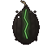
Not Collected hidden
Put the Rosemont Device into the Great Bloom. It's still beating.
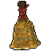
The Bell Tolls
Kill a Bellwether. The rest of them won't know where to go.

The Last Light hidden
End the changed Bloom
The Omni Ray hidden
Call SENTINEL down on the changed Bloom
Zero Responsibility hidden
Have the Omni taken back - for the future
Always Persistent hidden
Try to make the Ray Gun again
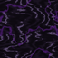
Ten Days Later hidden
The Watcher comes back - with a warning about the parasites
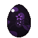
Something Inside
Let a Parasite hold on long enough to get into you
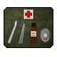
Cut It Out
Cut a parasite's brood out with a Surgical Kit
Burn It Out
Burn the brood out of yourself before it's too big
It Came Out of Me hidden
Live through a brood bursting out of your back
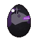
Head of the Pack
Kill a Static Hound Pack Leader, and watch the pack break
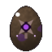
Not One of Them
See a villager turn into one of the Hollowed
It Isn't Itself
Be there when something the parasite took over turns
Dead Air
Find the relay the parasites talk through
Cut the Cord
Cut the last of the tethers off the relay's mast while what's at its foot still lives

Off the Air
Kill the Amalgam and silence the relay
Tuned In
Listen in on them with the Relay Core
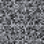
The Null
Come to the drive-in where the last of their static runs down
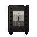
Signal Lost
Put an Afterimage all the way here long enough to kill it

The Last Reel
Run the last reel through to its end, and see where they come from
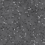
The Null Static Zone
Go through the tear at the drive-in, to where all of the static ran down
Cut Loose
Cut the last of the Carrier's threads

Signing Off
Kill the Carrier, and see the Watcher take what's left of it
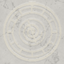
The Hush
Step over the line into one of the old pale houses, where the static can't follow
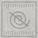
Unmade
See a hound come apart in a Hush's door
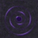
Put Your Ear to It
Listen at one of the ears cut into the old stones
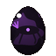
It Speaks
Hear the Chorus speak through its own
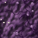
The Hive
Come to where the parasite is growing itself a mind
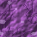
Senseless
Tear open all four of the Chorus's nerve nodes

It Ran
Drive the Chorus down out of its pit
Warmer
Follow the Chorus Fragment's whispers to where it went down
Down Where It Is Warm
Stand on the Throat at the bottom of the burrow, and let it take you into the Deep

It Came Up
Kill the Reach: the hand the Chorus tore up out of the ground at your home
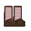
Not a Sound
Make boots out of a Listener's ears
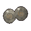
Stand Still
Kill the Deaf King in his hall

The Last Voice
Kill the Chorus, whole, in the Warm Heart
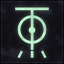
The Door at the End of the World
Carry the Last Voice into the End, and break his seal
Take Your Seat
Go through the Door into the Stalls

Quiet, Please
Keep perfectly still through the Crowd's Hush

Standing Ovation
Bring the Crowd down
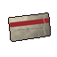
Front Row
See who was sitting in the front row
Admit One
Hold the Last Ticket up to the seam in the screen
Behind the Picture
Go through the seam, into the Watcher's Vault
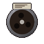
What He Kept
Take all three things out of his keeps

The Final Reel
Burn the Projectionist through

What He Kept Out
See his first reel

The Other Side
Go through the Door at the End of the World, its static gone black
Every Colour at Once
See the Omni's heart put into his last projector's lamp
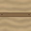
Out of Sight
Get through the first third of the Viewer without it ever seeing you right through
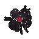
It Gets Up
Be there when what he kept out stands up

Thank You for Watching
See the last show

The Hub
Be taken into the realm he made, after the credits

ENOUGH hidden
Hear the First Signal - and jump
The First Signal hidden
Come down from the Hub, and hear what it is
Channel Changer
Be given the Remote
Previously On...
Go back to a chapter through one of the Hub's portals

Dead Water
Come down through his portal onto the rig
Back On Air
Mend the Remote with what a Static Leviathan sings with

Keep Watch
Put on all of the Vigil: the iron hood, its candles, the coat.

Out Standing in the Field
Put on all of the Scarecrow's clothes.

Rooted
Put on all of the Bloomwoven.

Specimen
Put on all of the Specimen gear, jar and all.

Off the Air
Put on all of Dead Air.

Front of House
Put on all of the Usher's uniform.
Live
Put on all of the On Air gear.

Something for Every Chapter
Hold a weapon from every chapter.
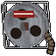
Rerun
Beat a replay again and keep what it leaves: a Rerun Reel.

Fallout
Break open a Fallen Star